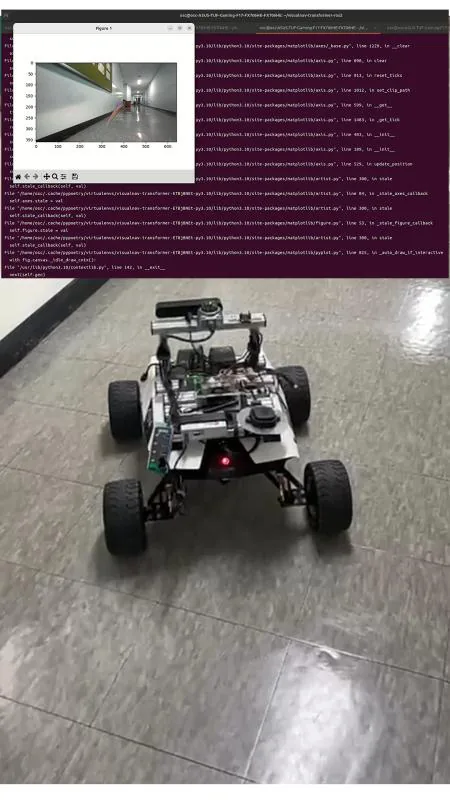

Robotics & AI Lab, Kwangwoon University
Open-Set 3D Scene Graphs on a Mobile Robot
Reimplemented a task-driven open-set 3D scene graph pipeline and deployed it on an AgileX Scout Mini with ROS 2 and Nav2.
- Role
- Robotics engineer
- When
- Kwangwoon University
- Where
- Robotics & AI Lab, Kwangwoon University
Overview
Research on 3D scene graphs is usually evaluated in simulation. This project took a task-driven, open-set 3D scene graph pipeline onto real hardware. I reimplemented the pipeline and deployed it on an AgileX Scout Mini mobile robot, integrated with ROS 2 and the Nav2 navigation stack.
